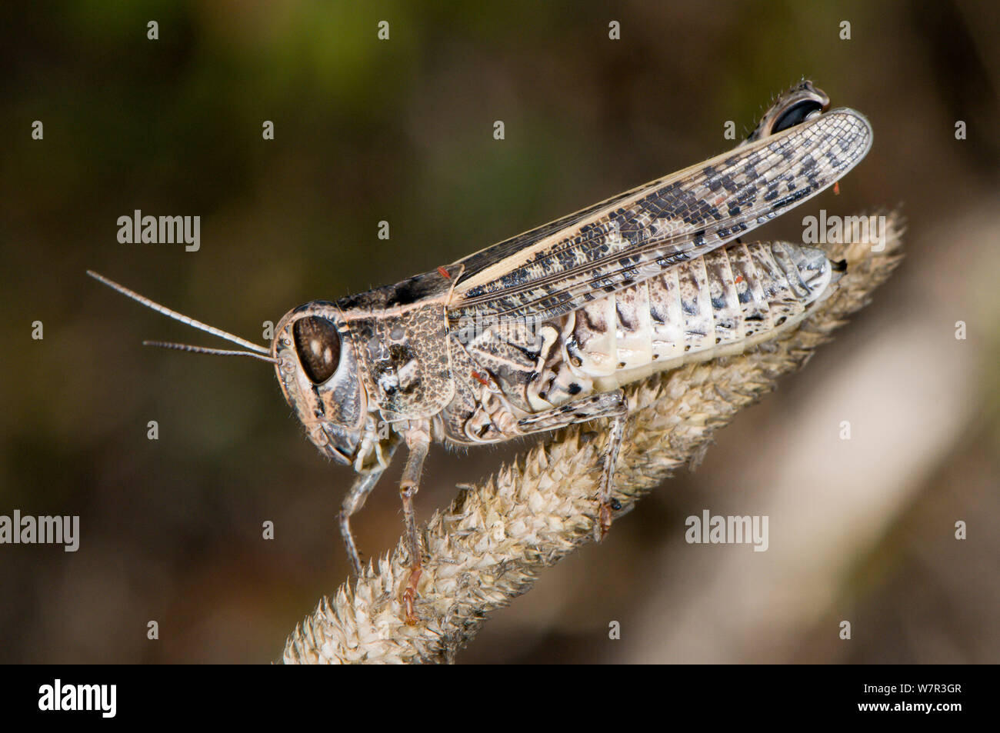
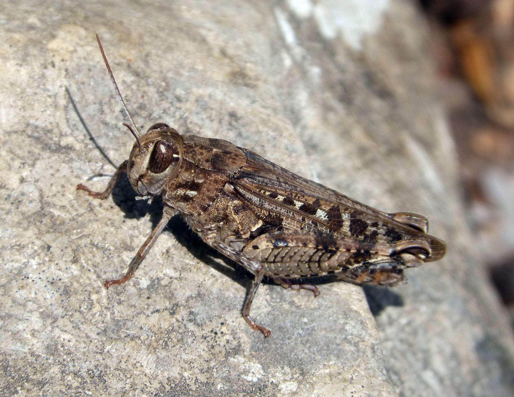
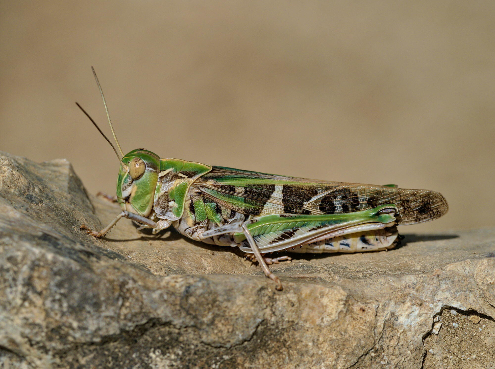
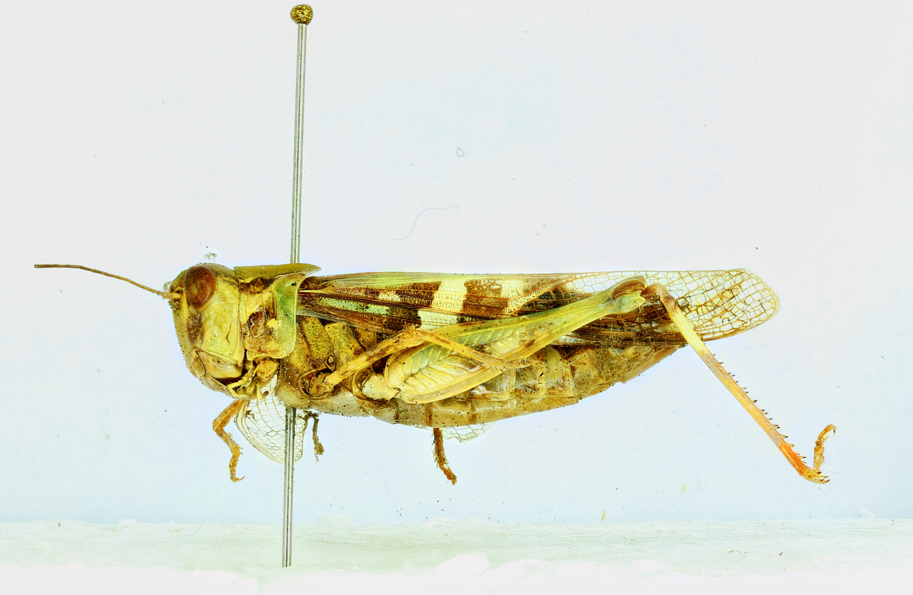
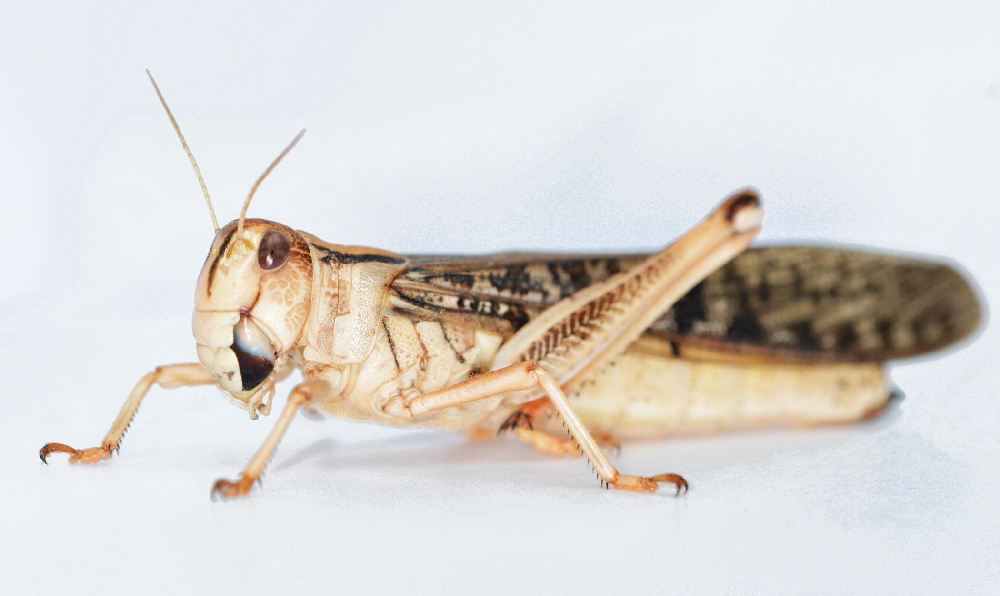
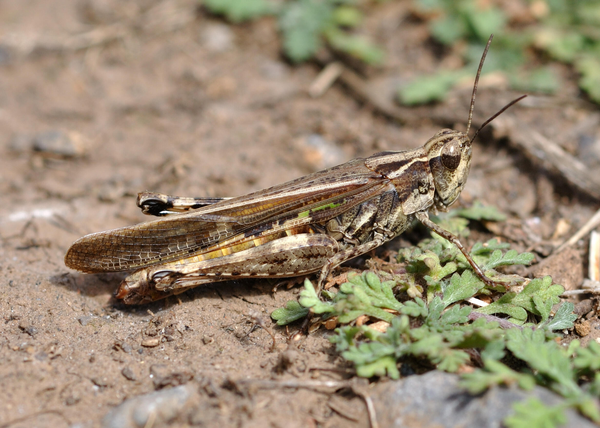
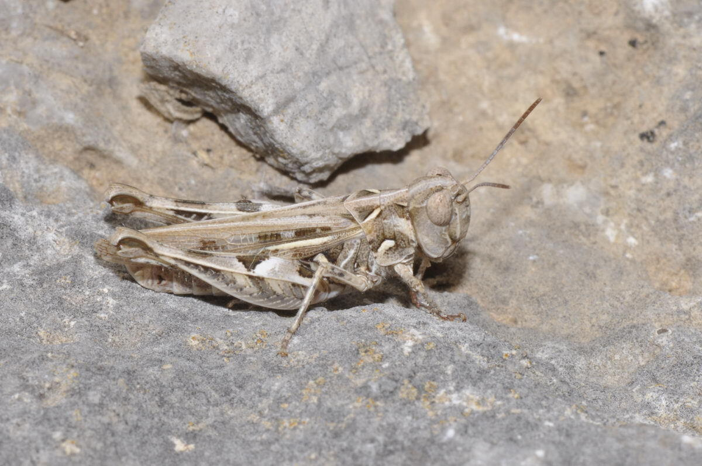

🖱️ Clic gauche + glisser: Rotation
🖱️ Clic droit + glisser: Panoramique
🔄 Molette: Zoom
🖱️ Clic droit + glisser: Panoramique
🔄 Molette: Zoom
Chargement du modèle 3D...
Espèces Principales
Calliptamus wattenwylianus

Taille: 15-25 mm
Habitat: Zones arides et semi-arides
Distribution: Afrique du Nord, Moyen-Orient
Critères d'identification
- Pronotum avec carènes latérales bien marquées
- Coloration généralement brunâtre
- Ailes postérieures transparentes avec nervures sombres
Calliptamus barbarus

Taille: 20-30 mm
Habitat: Steppes et prairies sèches
Distribution: Bassin méditerranéen
Critères d'identification
- Plus grande que C. wattenwylianus
- Pronotum à carène médiane saillante
- Ailes postérieures avec bande sombre
Oedaleus decorus

Taille: 18-28 mm
Habitat: Zones sablonneuses et rocailleuses
Distribution: Afrique du Nord, Europe du Sud
Critères d'identification
- Ailes postérieures rouge vif à la base
- Pronotum avec carènes latérales divergentes
- Coloration cryptique au repos
Oedaleus senegalensis

Taille: 20-35 mm
Habitat: Savanes et zones semi-arides
Distribution: Afrique subsaharienne
Critères d'identification
- Plus grande que O. decorus
- Ailes postérieures jaunes à la base
- Pronotum avec tubercules prononcés
Locusta migratoria

Taille: 35-55 mm
Habitat: Zones humides, marécages
Distribution: Cosmopolite
Critères d'identification
- Carène médiane du pronotum interrompue par le sillon typique
- Ailes postérieures non colorées, légèrement teintées de jaune
- Pronotum avec deux raies noires longitudinales
- Tegmina environ deux fois plus longs que les fémurs postérieurs
- Couleur du corps généralement vert vif avec tibias postérieurs rouges
Dociostaurus marrocanus

Taille: 17-33 mm
Habitat: Steppes et prairies
Distribution: Afrique du Nord, Europe du Sud
Critères d'identification
- Tête subconique, fastigium du vertex pentagonal
- Pronotum à métazone 1.5 fois plus longue que la prozone
- Croix jaunâtre claire soulignée par des taches noires
- Carènes latérales jaunes
- Trois taches noires losangiques sur les fémurs postérieurs
- Tibias postérieurs rougeâtres ou jaunâtres
Dociostaurus jagoi

Taille: 15-25 mm
Habitat: Zones rocailleuses et arides
Distribution: Afrique du Nord
Critères d'identification
- Couleur générale brun clair avec dessin typique en croix bien marquée
- Tegmina atteignent l'extrémité des fémurs postérieurs
- Trois taches noires losangiques sur la face supérieure des fémurs postérieurs
- Les tibias postérieurs sont pâles ou bleuâtres avec tache noire à la face interne